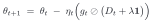
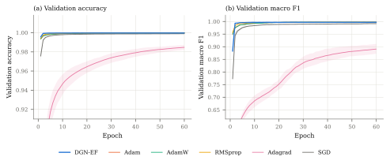
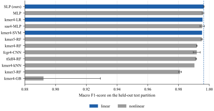

Seminar Antara · Penelitian SBK Tahun Anggaran 2026
Pendekatan diagonal generalized Gauss–Newton dengan damping terkontrol, diuji pada klasifikasi biosekuens SARS-CoV-2.
Dr. Mohammad Jamhuri, M.Si — Ketua Peneliti
Andy Irawan, S.Si · Mohammad Alvi Safruddin · Mutiara Alvi
Reg. 261030000120319 · LP2M UIN Maulana Malik Ibrahim Malang · 14–18 September 2026
Pembuka
Pertanyaannya: bisakah informasi kurvatur dipakai untuk melatih jaringan lebih cepat, tanpa membayar memori dan kerumitan metode orde-dua?
Yang akan saya sampaikan bukan hanya yang berhasil, tetapi juga dua hipotesis yang ditolak oleh data kami sendiri.
Latar belakang
Celahnya: belum ada preconditioner berbasis kurvatur yang sekaligus ringan, stabil, dan teranalisis.
Metode
Matriks GGN bersifat positive semidefinite selama rugi konveks terhadap keluaran.

Satu pembagian elemen-per-elemen. Biaya per iterasi setara Adam.
Aturan kalibrasi: λ besar menurunkan galat aproksimasi, tetapi membuat langkah makin konservatif.
Metode
Rencana awal temporal split kami ganti setelah menemukan bahwa sumber kebocoran dominan adalah genom duplikat-dekat, bukan urutan waktu.
182.585 latih · 36.545 validasi · 36.481 uji — partisi yang sama dipakai untuk seluruh model dan aturan pembaruan.
Metode
Tidak ada aturan yang disetel ke data ini. Keputusan ini merugikan kami sendiri — Adam dengan learning rate bawaannya bisa saja lebih baik — tetapi hanya dengan begitu perbandingannya bermakna.
Hasil · 1 dari 3
| Aturan pembaruan | Keluarga | Δ Macro-F1 | SD | p |
|---|---|---|---|---|
| DGN-EF (usulan) | Kurvatur | acuan | 0,00036 | — |
| RMSprop | Adaptif | −0,00202 | 0,00019 | 0,0040 |
| Adam | Adaptif | −0,00227 | 0,00068 | 0,0170 |
| AdamW | Adaptif | −0,00276 | 0,00016 | 0,0026 |
| SGD + momentum | Momentum | −0,00875 | 0,00105 | 0,0037 |
| Adagrad | Adaptif | −0,10842 | 0,01993 | 0,0172 |
Unggul 0,00202 atas pesaing terdekat — setara 5,7× sebaran antar-seed-nya sendiri. Urutannya memisahkan dua keluarga dengan bersih.
Hasil · 1 dari 3

Rerata tiga seed, pita minimum–maksimum. DGN-EF mengendap sekitar epoch ke-5; Adam dan AdamW memerlukan sekitar 25. Sumbu vertikal dipangkas dari bawah, Adagrad di luar bingkai.
Hasil · 2 dari 3

Sembilan dari dua belas model bersifat nonlinear. Model terbesar (112 MB) justru 0,0061 lebih buruk daripada yang terkecil (9 KB). Sumbu dimulai dari 0,88, sehingga panjang batang melebih-lebihkan selisih yang sesungguhnya paling besar 0,006.
Hasil · 3 dari 3
Bukan kegagalan optimisasi — Adam bawaan pustaka pun mentok. Bagian arsitektur pada laporan sudah kami koreksi.
Hasil · 3 dari 3
| Ambang macro-F1 | DGN-EF | Adam | Rasio |
|---|---|---|---|
| ≥ 0,95 | 5,7 | 14,3 | 2,5× |
| ≥ 0,99 | 12,0 | 38,7 | 3,2× |
| Rugi latih akhir | 0,0026 | 0,0111 | 4,3× |
| Aturan | Rerata | SD |
|---|---|---|
| DGN-EF | 0,99631 | 0,00176 |
| Adam | 0,99513 | 0,00201 |
Uji Welch p = 0,487 — tidak signifikan. Pada seed 123 Adam justru unggul. Dan Adam belum konvergen pada anggaran 60 epoch, jadi rasio 3,2× itu batas bawah.
Klaim yang kami bawa karena itu dipersempit: efisiensi, bukan akurasi.
Hasil · pengujian hipotesis
Dengan gradient clipping seperti protokol naskah, empat aturan teratas memiliki lebar rentang persis sama (6,0 dekade, nol divergensi dari 390 run) — protokol itu sendiri tidak mampu menguji H3. Temuan ini berlaku bagi siapa pun yang mengklaim robustness di bawah clipping.
Sintesis
Capaian
| Kegiatan 1–7 | Selesai |
| Kegiatan 8 — ablasi dan sapuan | Sebagian |
| Kegiatan 9–10 — analisis, finalisasi | Nov–Des |
Serapan anggaran 31%, konsisten dengan jadwal: publikasi dan diseminasi memang jatuh pada triwulan keempat.
| AIRoSIP 2026 (IEEE, Scopus) | Diterima |
| Jambura J. of Biomathematics | Submit |
| Neural Networks (Elsevier) | Direviu |
| Jurnal Online Informatika | Siap |
| Naskah representasi–kurvatur | Draf |
Dua temuan sampingan sudah menjadi naskah tersendiri: partisi sadar-grup dan kegagalan GAP.
Penutup
Masukan atas dua hal: rancangan sapuan η pada arsitektur nonkonveks, dan cara paling jujur menyampaikan H2 yang hanya berlaku pada satu representasi.
Dari tiga hipotesis, yang bertahan adalah efisiensi konvergensi — dan itu berlaku pada dua arsitektur. Klaimnya kami persempit sesuai bukti.